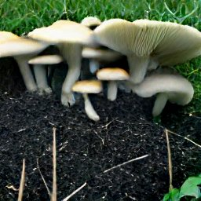

How to Make a Mushroom Bed
by mushroomman
Posted on 26-10-2022 10:11 PM

If you want to try growing your own mushrooms but don’t like the idea of doing it indoors, an outdoor mushroom bed is a great option worth considering. How can you grow mushrooms outdoors? you can grow some species of mushrooms like the king stropharia, oyster, or elm mushroom outdoors in a mushroom bed. 
Getting started 4. 20 the first stop for cultivators of any level seeking information about the cultivation of psilocybes particularly p. Cubensis other psilocybin species species-specific information and techniques for non-cubensis mushrooms outdoor cultivation information about creating and managing outdoor mushroom beds gourmet mushrooms guides to growing non-active edible and medicinal mushrooms archive.
Mushroom is not required direct sunlight as it is essential in the case of vegetables which are having green leaves plants but the beds of the mushroom must be protected from the direct sunlight and rains. Thus, the mushroom is grown either in the house or in a hut or any cover and below any cover of the root which is having sufficient aeriation.
Growing mushrooms on logs is very much like planting seeds in a raised bed. You make a hole in the soil (log), you plant the seed (plug spawn) and you seal the hole over (with wax instead of soil). Given the right conditions (shade instead of sunlight) and good moisture, the roots (mycellium) will search out nutrients and when the plant (fungus) is ready, it will set fruit (mushrooms). This is definitely one of those projects where you can jump in feet first, but below are some detailed instructions to make sure you get it right.
Learn more about Outdoor Growing
Growing mushrooms outdoors can be a rewarding, low maintenance way to transform waste into food for you and other organisms. 
A high-quality gourmet mushrooms grow kit can actually make growing a lot easier for you, especially if you are a beginner who’s yet to learn the basics of cultivating mushrooms indoors, or even outdoors for that matter. Growing without them first can be fun when you’re already an expert and not when you’re still a struggling mushroom tender.
Learn more about outdoor growing + fungi perfecti offers a number of gourmet mushroom species for outdoor cultivation. Outdoor growing takes longer than most indoor projects, which are designed for fast growing with an accelerated life cycle. The media used for outdoor growing depends upon the mushroom being cultivated; outdoor projects are generally either grown in logs or stumps, or else in beds of materials such as hardwood chips. Mushroom mycelium is introduced to the medium in various forms, such as sawdust spawn (for beds) or plug spawn (for logs and stumps). After the medium is fully colonized with mushroom mycelium (typically 9–12 months), with appropriate care, mushrooms will begin to form and should continue to appear for several years thereafter.
See MissouriTrappersAssociation for even better info.